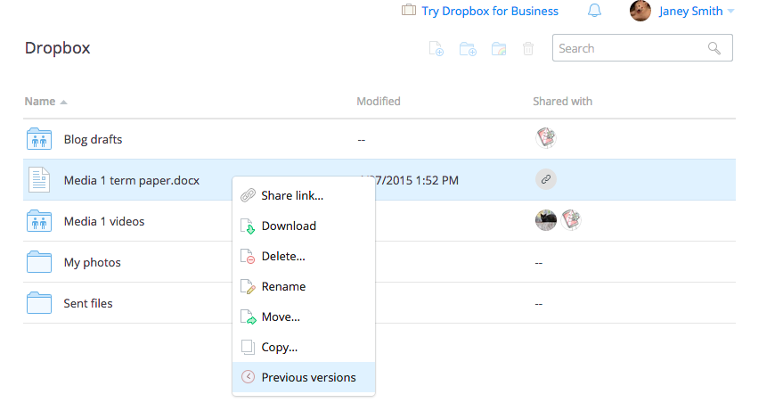
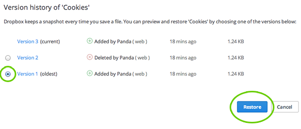

Version Control
Making code management suck less
By Basil Veerman
What is Version Control?
the task of keeping a software system consisting of many versions and configurations well organized
Why use it?
Basic Version Control
Basic Version Control
Git
Git Structure

Version Control Structure

Git Structure

Lets get to it
Basic Commands
-
git config
git init
git clone
git diff
git add
git commit
Git Config
git config --global user.name "User Name"
git config --global user.email email@address.ca
git config --global core.editor fav_editor
Git Areas

Backup/Sharing code
Github
-
git clone
git pull
git push